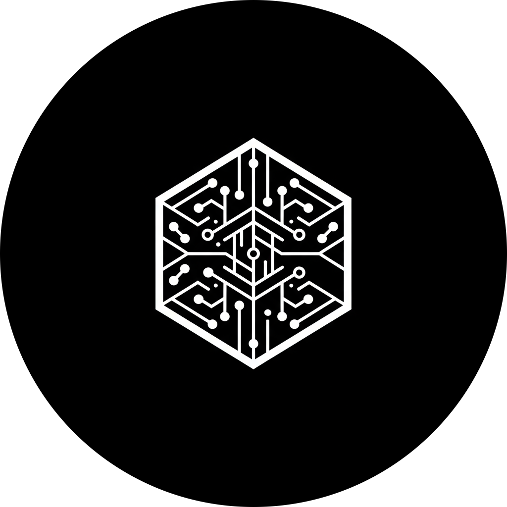
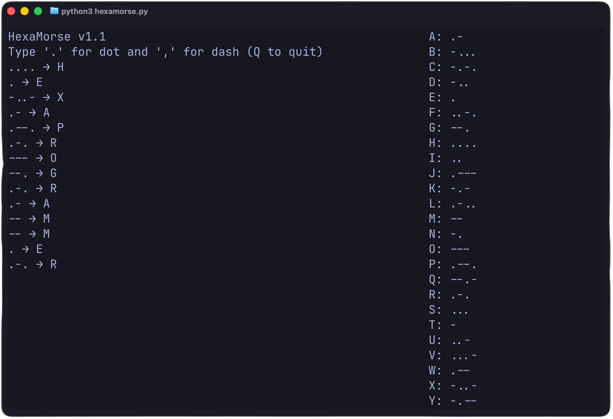

Real-time decoding
Morse input is decoded immediately as the user types, offering instant visual feedback.

Hexa-Programmer PresentsHexaMorse is a terminal-based Morse code typing tool with a real-time cheatsheet. Type dots and dashes, and decode Morse instantly. Built using Python and powered by curses, it is designed for practicing Morse code in a cross-platform, open-source environment.

Morse input is decoded immediately as the user types, offering instant visual feedback.
The complete Morse alphabet remains visible while using the application for quick reference.
Previously entered Morse symbols and their translations remain continuously available in a scrollable history buffer.
Designed specifically and exclusively for the terminal utilizing Python's robust curses interface.
Thoroughly tested on Linux/Arch with curses and designed to run flawlessly across supported Python environments.
No backend, no accounts, no unnecessary dependencies, and no complicated setup procedures required.
HexaMorse simplifies standard Morse code input by mapping common keyboard characters directly to Morse symbols. The interface processes these mapped keystrokes natively.
. → Dot, → DashQ → Quit
.- → A--. → G... → S
Interaction with HexaMorse is designed to be highly reflexive. Upon launching the application, the user simply enters a period . to register a dot, or a comma , to register a dash.
The interface captures the ongoing sequence and dynamically outputs the translation. If unsure of a character, the user can glance at the persistent cheatsheet located on the right side of the layout. Pressing Q safely exits the process and restores the terminal state.
git clone https://github.com/HexaProgrammer/HexaMorse.git
cd HexaMorse
python main.py
Requires Python 3.x. The curses library is natively included with Python on Linux and macOS environments. No root privileges or virtual environments are required for execution.